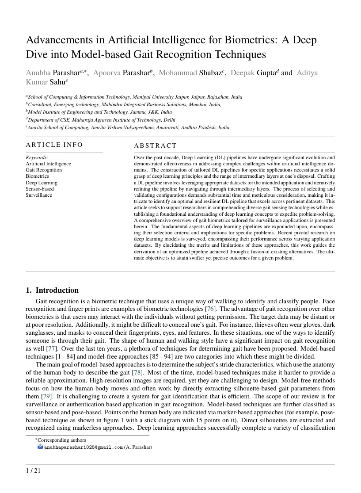
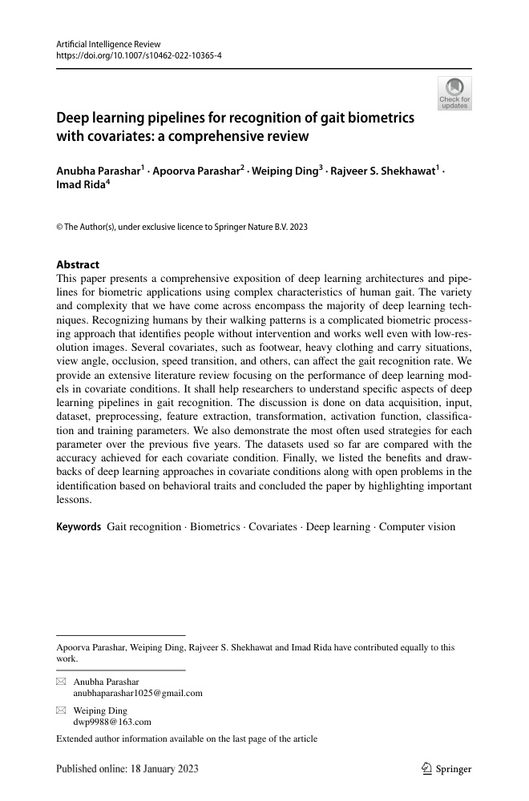
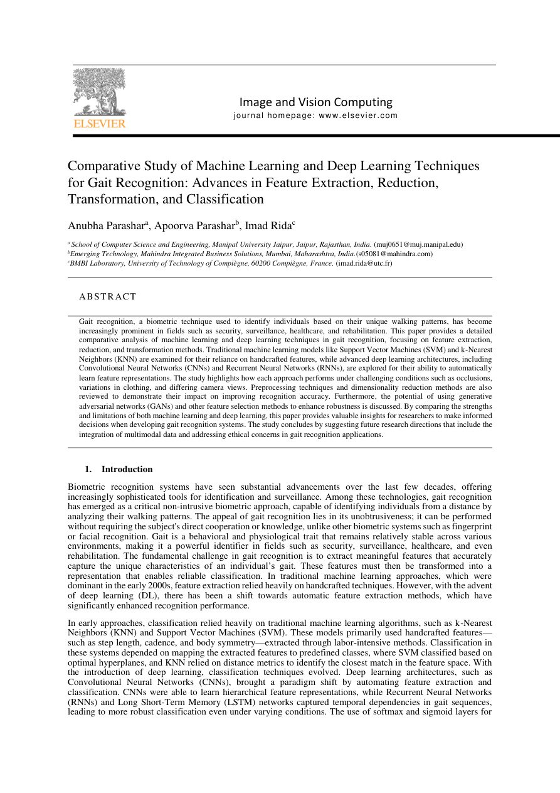
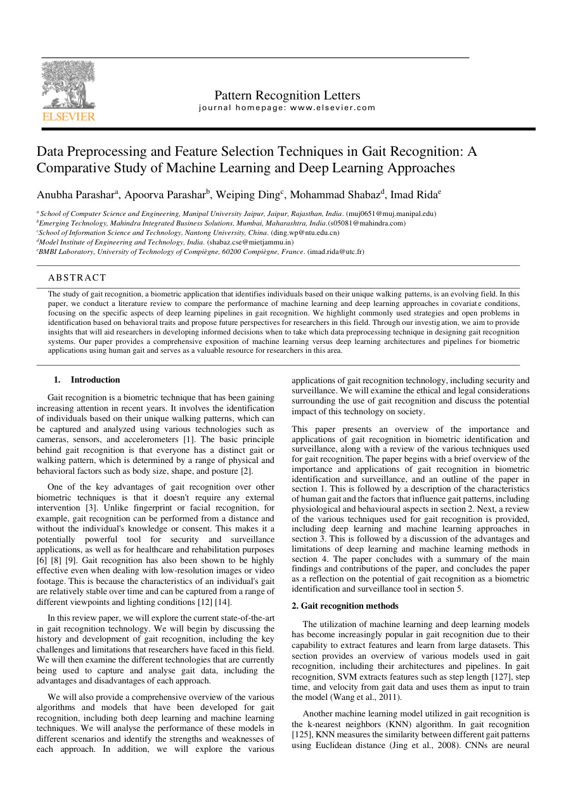
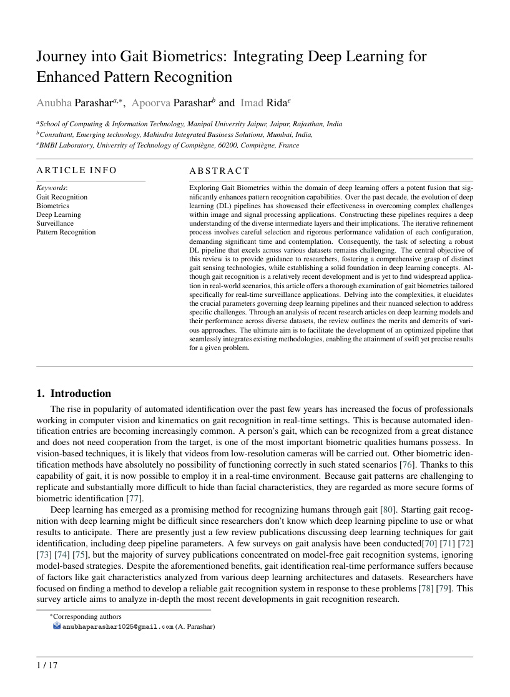
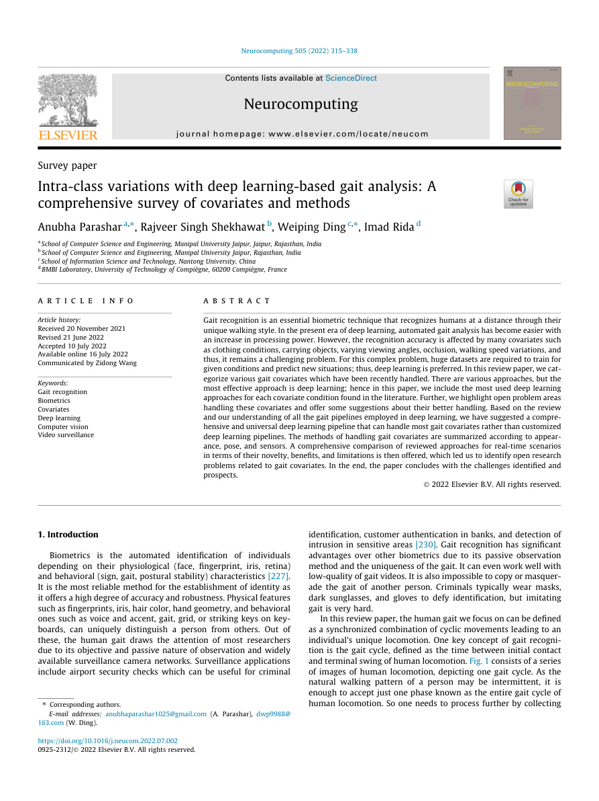
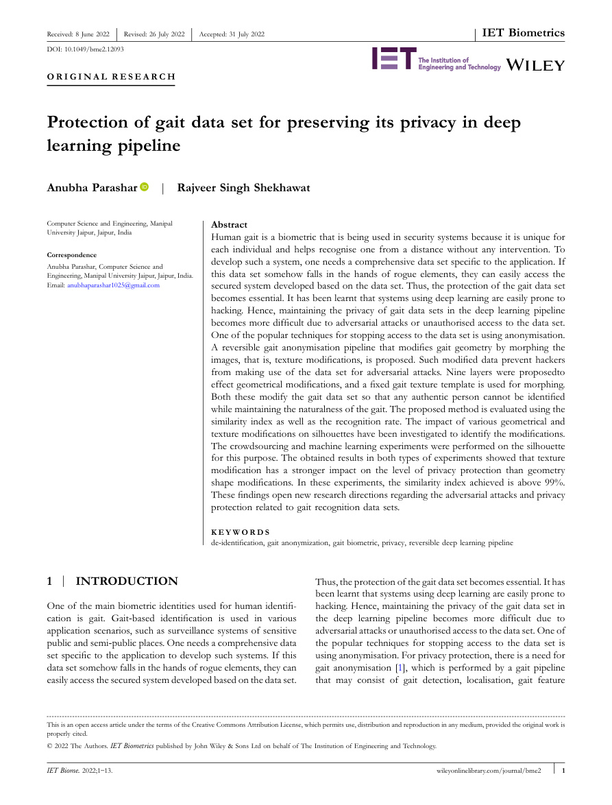
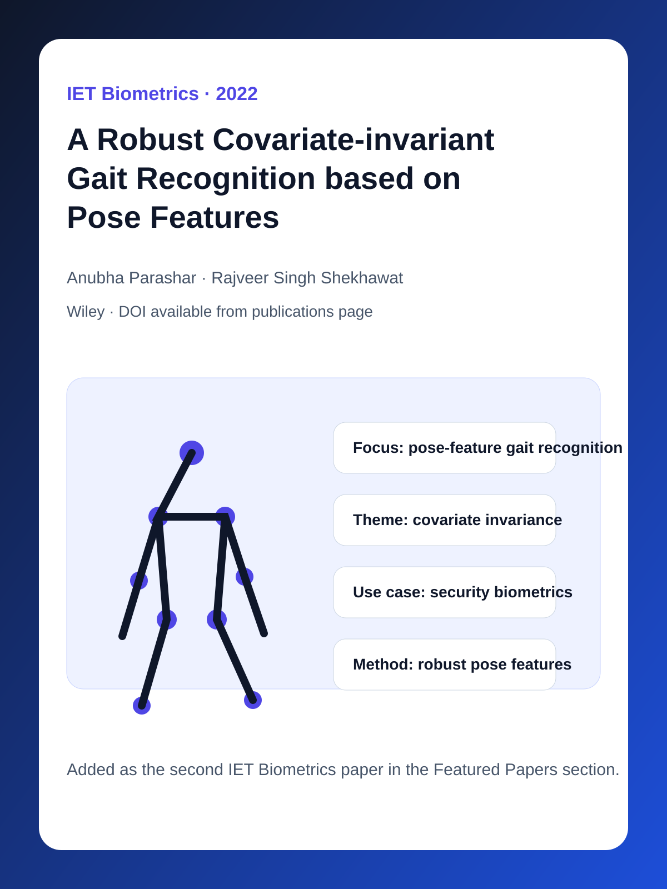

Research-backed gait intelligence company
Human movement is an identity, safety, and health signal.
GaitAI converts walking patterns into operational intelligence through two focused product lines: surveillance gait recognition and medical / gait-fall analytics.
Peer-reviewed publications
Multimodal gait dataset
Security + healthcare markets
GaitAI OS
Surveillance intelligence preview
Live
Company thesis
A defensible gait AI platform, not a generic computer-vision demo.
GaitAI is built around a research moat: covariate-robust gait recognition, privacy-preserving data pipelines, multimodal sensing, and pose-based interpretation. The company story is designed to be credible for investors, enterprise buyers, hospitals, and research partners.
Perception layer
RGB, depth, thermal, infrared, pose points, and wearable motion signals are treated as a combined movement intelligence stream.
Gait intelligence layer
Models reason over covariates such as view angle, clothing, speed, carrying condition, occlusion, and movement variability.
Product layer
Outputs become security review cues, mobility scores, fall-risk signals, rehabilitation trends, and interpretable case summaries.
Publications
Peer-reviewed research behind deployable gait intelligence.
GaitAI is grounded in published work across biometric recognition, surveillance readiness, deep learning pipelines, covariate robustness, pose features, and privacy-preserving gait data.
8
featured papers

Advancements in artificial intelligence for biometrics: A deep dive into model-based gait recognition techniques
Engineering Applications of Artificial Intelligence, 2024
A broad review of model-based gait recognition techniques that connects AI biometrics, pose representation, and real-world recognition constraints. This is central to the surveillance identity-support story.

Deep Learning Pipelines for Recognition of Gait Biometrics with Covariates - A Comprehensive Review
Artificial Intelligence Review, 2022
A complete view of the deep learning gait pipeline, from acquisition and preprocessing to representation, covariate handling, model training, and recognition. It gives GaitAI a technical basis beyond a narrow demo.

Real-time Gait Biometrics for Surveillance Applications: A Review
Image and Vision Computing, 2023
A deployment-oriented review focused on the constraints of real-time surveillance: camera viewpoint, subject distance, occlusion, speed, and identity support when face recognition is not reliable.

Preprocessing and feature selection in gait recognition
Pattern Recognition Letters, 2023
This work supports the product's feature engineering and signal-quality narrative: gait intelligence depends on clean preprocessing, meaningful feature choice, and robust representation before model output.

A journey into gait biometrics with deep learning
Digital Signal Processing, 2024
A deep learning-centered treatment of gait biometrics that connects signal processing, model design, and practical recognition. It helps position GaitAI as a full-stack gait intelligence company.

Intra-class Variations with Deep Learning-based Gait Analysis: A Comprehensive Survey of Covariates and Methods
Neurocomputing, 2022
A covariate-rich survey covering clothing, carrying conditions, viewing angle, walking speed, surface, and other real-world variables that make gait recognition difficult outside controlled labs.

Protection of gait data set for preserving its privacy in deep learning pipeline
IET Biometrics, 2022
A privacy-preserving gait pipeline direction for biometric data handling. This matters commercially because identity and health products need explicit privacy and governance language.

A Robust Covariate-invariant Gait Recognition based on Pose Features
IET Biometrics, 2022
A pose-feature approach to covariate-invariant gait recognition, directly supporting GaitAI's move from raw video toward interpretable body-motion representation.
Product tracks
Two separate products built from one gait intelligence core.
Surveillance and medical gait analytics should not be blended into one message. Each has a different buyer, deployment environment, output, and value proposition.
Security product
Primary buyerSecurity operations, campuses, enterprises, controlled facilities, transport hubs
Core outputGait identity support, repeat-visitor review, movement anomaly cues, case triage
Deployment valueWorks as a behavioural intelligence layer beside camera networks and operator review
Research baseReal-time gait biometrics, covariate robustness, pose features, privacy-aware data handling
Open full surveillance product page
GaitAI Surveillance
For security teams that need an additional identity and behaviour signal when face recognition is weak, unavailable, covered, distant, or not legally appropriate as the only biometric layer.
Clinical mobility product
Primary buyerHospitals, rehab centres, physiotherapy clinics, elder-care programs, remote monitoring teams
Core outputMobility score, gait asymmetry, stability trend, fall-risk signal, session comparison
Deployment valueTurns video and pose movement into repeatable summaries that care teams can review over time
Research baseFeature selection, deep learning gait pipelines, multimodal dataset design, pose-point analytics
Open full medical / GaitFall product page
GaitAI Medical / GaitFall
For clinicians, rehabilitation teams, elder-care providers, and mobility programs that need interpretable gait measurements for progress tracking and fall-risk prioritisation.
Dataset
Proprietary multimodal gait dataset built for real-world variation.
The dataset is a company asset. It captures walking across sensors, views, and covariates that matter in deployment: clothing changes, carried objects, speed, occlusion, elevation, stairs, zigzag walking, and multi-gait patterns.
Surveillance capture videoCamera-based gait capture for identity support, pose overlays, and security review workflows.
Medical / GaitFall capture videoMovement samples for mobility assessment, gait-quality review, rehabilitation tracking, and fall-risk analytics.
Open dataset structure PDF
Dataset summary derived from maindataset.pdf
Founder
Built around Dr. Anubha Parashar's research depth in gait biometrics.
GaitAI should present Dr. Parashar as the technical authority behind the company: publications in Artificial Intelligence Review, Neurocomputing, Engineering Applications of Artificial Intelligence, Image and Vision Computing, Pattern Recognition Letters, Digital Signal Processing, and IET Biometrics.
Investor and partner narrative
GaitAI is a company built from defensible research, not a surface-level AI wrapper.
Peer-reviewed research, multimodal data, and focused product tracks create a credible path from gait biometrics to security and healthcare deployment.